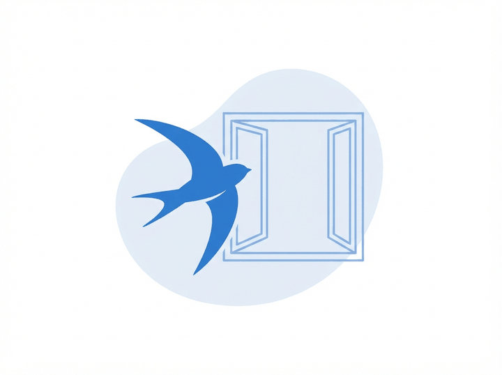
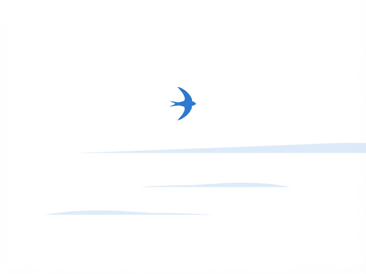
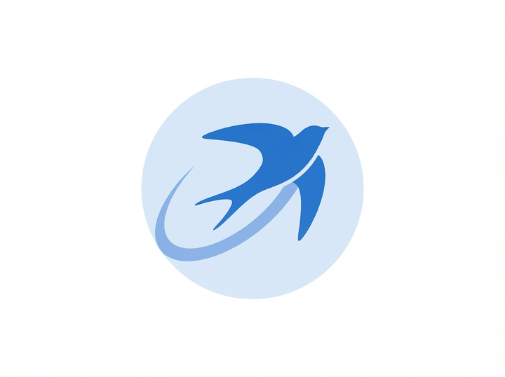
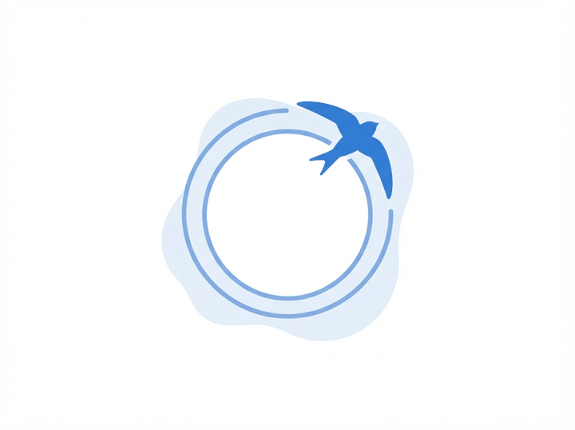
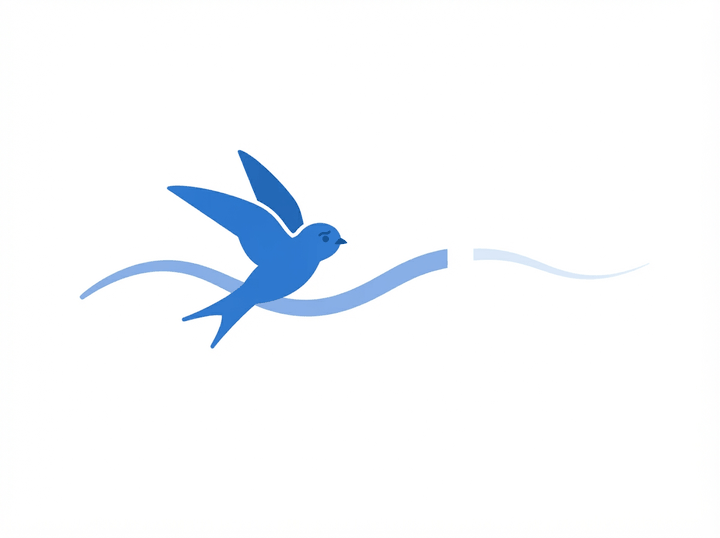

Экраны без данных
Пустой экран — не заглушка, а первое впечатление о продукте. Он обязан объяснять, что произошло, и говорить, что делать дальше.

Подключите первый канал — это три минуты и не требует программиста.
Подключить канал
Как только клиент напишет, сообщение появится здесь. Обновлять страницу не нужно.

Ни одного диалога без ответа. Новые появятся здесь же.

По запросу нет ни одного диалога. Попробуйте часть имени или слово из переписки.

Сообщения из ВКонтакте временно не приходят. Ничего не потеряно — переподключите канал, и всё пропущенное подтянется.
Переподключить